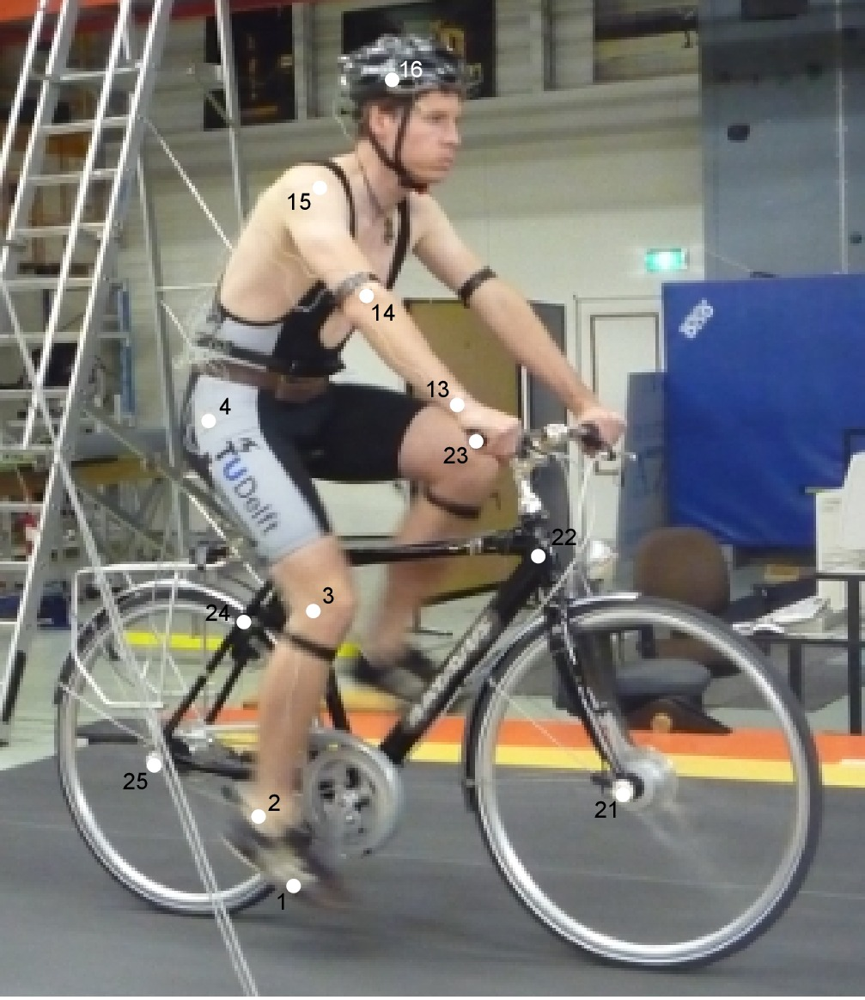
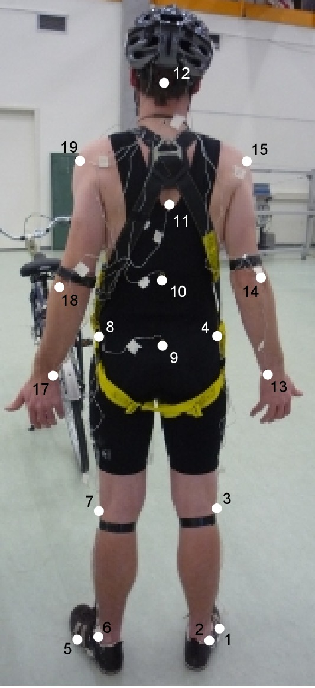
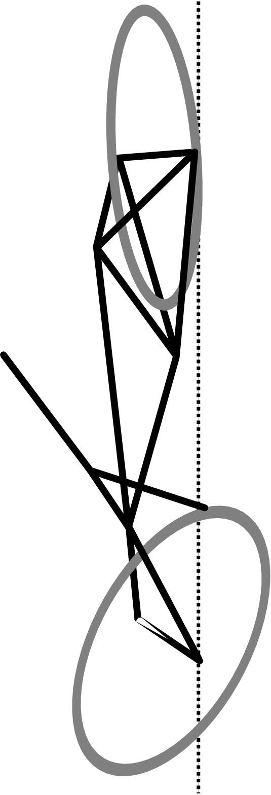
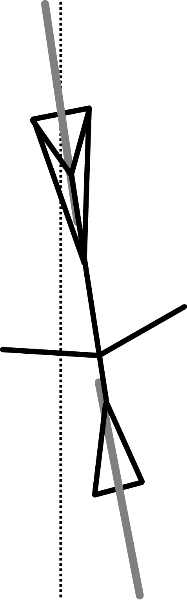
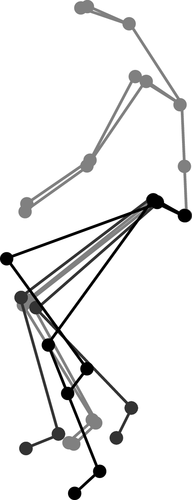
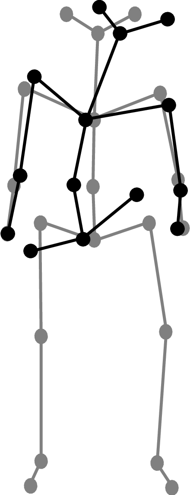
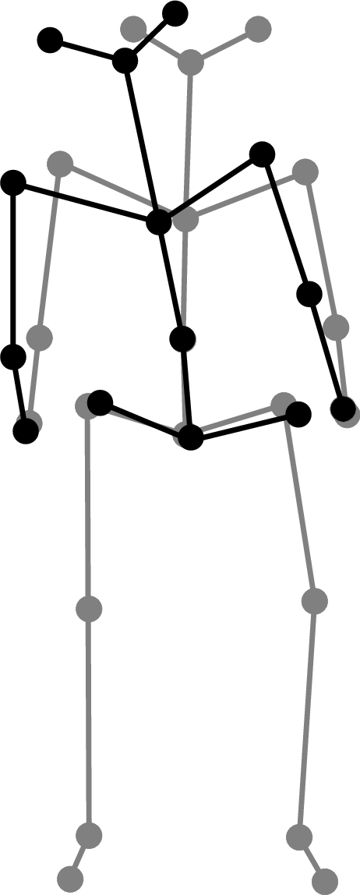
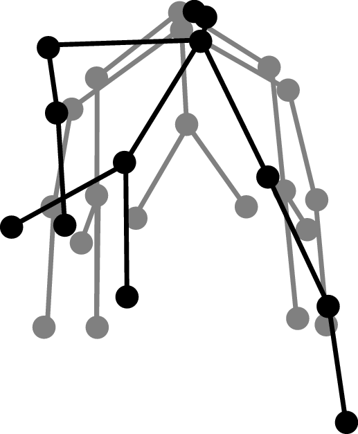
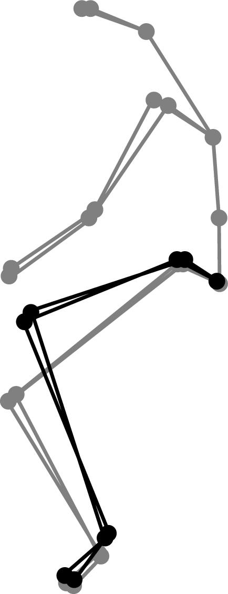
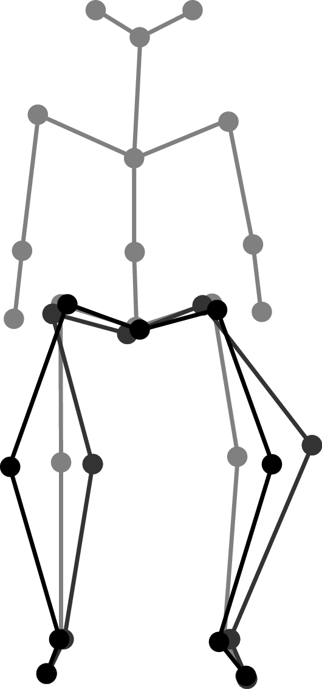

Motion Capture¶
Warning
This document is a draft which is updated regularly (Last updated January 03, 2012 at 15:53:28 PST). Once I submit if for my doctoral degree at UC Davis, it will be done. So for now use at your own risk. The information may or may not be correct. Reviews, comments and suggestions are welcome.
Preface¶
Sometime during the winter of 2008, Arend proposed our next project while I was at Delft. I had told him that I wanted to have a project to call my own while I was there, that could be written up as a major portion of my dissertation and he proposed doing a motion study using principal components techniques in much the same fashion as [Troje2002] had done with walking subjects. I think he’d formulated the idea in discussion with Andy Ruina, his longtime vacation buddy and colleague. I’d never heard of principal components (my statistics was and is still weak), so I started reading up on principal components and what Troje had done with walkers. I got a grasp of the technique and formulated a plan based around a bicyclist riding on the large treadmill we had access to and capturing their kinematics with a motion capture system. We went up for a preliminary test day to check out the motion capture system and meet Richard Casius who was the lab technician that knew the equipment. I was expecting he’d just show us the on/off button and make sure we didn’t break anything, but he actually was there to run the system, help us figure it all out, and even do some post processing of the data. This was odd for me, as my experience in the U.S. was always that I had to do everything myself. Jodi was the rider for the preliminary tests. It went well and we felt confident that we’d get the kind of data we wanted. So we came back and started planning for three days of testing with three riders. Jodi and I were going to ride and my fixie friend, Victor, agreed to ride for us one day too. We had three successful days of testing and then Jodi and I began analyzing the data with him coding a visualization GUI that we’d devised and me processing the data using the PCA methods. Once we could see the data, we went through every run manually and tried to build a data set of observations.
I got frustrated at this point, because we’d finally got to the results part and it seemed to me that Jodi and Arend we taking over the results part. I felt as if I’d put all my 100% effort into the work up to that point and because I had this notion of ownership of the final product it seemed as if my colleagues were getting to do the grand finale, where as I wanted to be in control. We made it through it though, despite my discontent. Arend and Jodi didn’t really understand my frustations and deemed it a cultural difference. I didn’t buy that then, but now reflecting I tend to agree. My upbringing and school training left me with little experience with true teamwork and I’ve had my eye on the PhD dissertation as some kind of embodiment of my personal understanding of everything that has to do with the subject I’ve been studying. I had never really seen it as a collection of many people’s effort and the result being my orchestration of the collective ideas. These kinds of realizations are what the heart the Fulbright grant is. I went into the grant thinking more about accomplishing the research goals that I proposed to do, but after the fact I realize that cultural understanding and personal interactions allowed me to grow a person and realize teh world in a more gloabl sense than any of the research accomplishments did. That kind of foresifth from the founders of grants like these are invaluable to humanity as a whole. I wish every high school student or college student in the U.S. was required to study abroad. I think the politcal climate we see in the world would be greatly affected.
Another tactic that was new to me was sending in an abstract for a conference that really only talked about what we tend to do with the idea that it gives you a deadline to get something done. This worked well here, but I can’t say that it has been succesful for me since. We first presented the results of this study at the ECCOMAS Multibody Dynamics conference in June of 2009 and I think it went pretty well [Moore2009].
After the conference, the paper was selected to be published in the Multibody System Dynamics journal. I turned it down because Arend was more interested in publishing to the Journal of Biomechanics. But I had recently been learning a lot about the open science movement and knew that our University currently had an agreement with Springer that the open access fee would be waived for all articles published by UCD affliates and Multibody System Dynamics is a Springer journal. So I decided that would be the better choice, as journal titles seem like they are more and more irrelevant for my generation. We search for articles on the internet and read them regardless of where they published, the filtering of quality content is becoming an entirely different mechanism as it was for science in previous generations. I see the journal as a soon to be lost relic. The peer review may be consusmed by collective quality control by the readers.
The work in this Chapter comes from two sources, the first is the peer reviewed Mutlibody System Dynamics article, [Moore2011], of which I’ve copied verbatim. The second is an addendum to the results which was presented at the ISEA 2010 conference in Austria [Moore2010]. It is a lead in to looking at the data with some other statiscal tools of which I’ve had a growing interest in, but less that adqequate understanding.
Experiment Design¶
We performed a wide range of manuevers with three different riders at several speeds. The aim of this section is to provide a detailed description of the experiments and the accompanying data.
The experiments were performed in a controlled environment while the motion of the bicycle and rider were measured with an active motion capture system [Northern2009]. The rider rode on a \($3\times5$\) meter treadmill, (Figure Rider 1 and the Batavus Stratos Deluxe with marker positions. Body marker positions visible from the rear.) capable of belt speeds up to 35 km/h. Three male riders of similar age [23, 26, 31 years] and build [height (1.84, 1.83, 1.76 m) and mass (74, 72, 72 kg)] participated as subjects. Each rode two different Dutch bicycles. Each rider performed all runs in one day in the same order (no randomization) and was instructed to bicycle comfortably at a constant speed in the range of 2 to 30 km/h for the duration of the run. There were at least 2 repetitions of each speed with each bicycle. A run was sampled at a frequency of 100 Hz for 60 seconds.
Equipment¶
All of the experiments were performed on a 3x5 m treadmilll at the the Vrije Unitversetiet over a three day period. The treadmill had a 1% incline. We used two bicycle donated by Batavus: the Browser and the Stratos Deluxe. The three riders were all in their twenties, male and of similar build and athletic ability.
Todo
Find the direction and magnitude of the treadmill incline.
Manuevers¶
- Normal
- For the “normal” bicycling task we instructed the riders to focus their sight into the distance and simply stabilize the bicycle and keep the heading generally pointing in the direction of the treadmill band velocity. Thus they were required to keep the bicycle roll angle and heading angle at zero. The rider pedaled during the experiment and was told to ride as if you were traveling down a straight empty road.
- Towed
- The towed experiments were the same as the normal except that a rope was attached to the headtube of the bicycle and attached to the front railing of the treadmill. This allowed the rider to not have to pedal. The rider keep the cranks horizontal and was left to choose which foot he wanted forward. The rope could potentially applied lateral forces to the frame if the rider drifted too much laterally. We may have held the rope and moved left and right.
- Line tracking
- The line tracking manuever was the same at the normal manuever except that the rider was instructed to keep his front wheel on a line we drew on the treadmill. This caused the rider to focus on not only stabilization but lateral deviation control.
- No-hand
- We did some experiments with no hand riding (i.e. no steering control). The rider’s placed their hands on their hips and attempted to stablize roll and yaw. Most of the these runs were with pedaling, but a few were taken with towing.
Todo
Did we tie off the tow rope or did Arend hold it and move laterall with the bicycle?
Data¶
Todo
include parameters for the riders
The primary data was the three dimensional locations of the 31 markers for each run. We sampled at 100 hz, giving 31 markers * 3 coordinates * 100 hz * 60 seconds = 558,000 data points per each one minute run. We collected data for 268 one minute runs and 3 shorter static measurements of the bicycles for a total of 271. The data for the first rider ended up somewhat corrupted. There are a lot of irractic value changes in the data. The basic motion is there though and clever filtering could clean the data for use.
Todo
Preliminary data day and tv show day data.
Source Code¶
The original data was processed with a series of Matlab scripts and then the resulting processed data files were viewed with a Matlab program.
The source code can be found at http://github.com/moorepants/MotionCapture.
Todo
Write a detailed readme about the files.
Principal Component Analysis¶
Abstract¶
Recent observations of a bicyclist riding through town and on a treadmill show that the rider uses the upper body very little when performing normal maneuvers and that the bicyclist may, in fact, primarily use steering input for control. The observations also revealed that other motions such as lateral movement of the knees were used in low speed stabilization. In order to validate the hypothesis that there is little upper body motion during casual cycling, an in-depth motion capture analysis was performed on the bicycle and rider system.
We used motion capture technology to record the motion of three similar young adult male riders riding two different city bicycles on a treadmill. Each rider rode each bicycle while performing stability trials at speeds ranging from 2 km/h to 30 km/h: stabilizing while pedaling normally, stabilizing without pedaling, line tracking while pedaling, and stabilizing with no-hands. These tasks were chosen with the intent of examining differences in the kinematics at various speeds, the effects of pedaling on the system, upper body control motions and the differences in tracking and stabilization.
Principal component analysis was used to transform the data into a manageable set organized by the variance associated with the principal components. In this paper, these principal components were used to characterize various distinct kinematic motions that occur during stabilization with and without pedaling. These motions were grouped on the basis of correlation and conclusions were drawn about which motions are candidates for stabilization-related control actions.
Introduction¶
Much progress has been made in understanding the rigid body dynamics of an uncontrolled bicycle ([Meijaard2007], [Kooijman2008]) and various control schemes have been explored for tracking purposes ([Peterson2008a], [Schwab2008], [Sharp2008a]), but little is understood about how a bicyclist actually stabilizes a bicycle during normal riding. A bicycle and rider system is unique among vehicles in that the rider is from 80 to 90% of the total mass of the system, the system is laterally unstable, and the rider is flexibly coupled to the bicycle in such a way that many body motions can be used as control inputs. Previous research into realistic bicycle control has focused on both steering and rider lean as control inputs, but there has been no experimental verification of which motions a rider actually uses for control. Recent observations of a bicyclist riding through town and on a treadmill [Kooijman2009a] show that the rider moves the upper body very little when performing normal maneuvers and that the bicyclist may, in fact, primarily use steering input for control. This corresponds well with the fact that control by leaning requires high gains compared to the gains required for steering when employing an optimal control strategy on a model ([Peterson2008a], [Schwab2008], [Sharp2008a]). The observations also revealed that the rider may use other control inputs such as drastic knee movements at low speeds. These conclusions were drawn by visually reviewing video data, so a more rigorous objective method of characterizing the dominant movements of the bicyclist while stabilizing a bicycle was needed. In order to validate the hypothesis that there is little upper body motion during normal cycling, motion capture techniques were used on the bicycle and rider system with the intent to use principal component analysis to identify the major motion patterns.
Principal component analysis has successfully been used with data collected from motion capture techniques to identify the dominant modes of motion of a person walking on a treadmill [Troje2002] and to characterize different types of walking. We use similar methods for steady, normal bicycle riding on a treadmill. Cyclic motions, such as pedaling, are easily identified and separated from the other less cyclic control actions. Identifying the patterns of movement gives insight into which body movements are primarily used and are candidates for control inputs. This will be valuable for our overall research goals that includes the design of a realistic biomechanical-based control system of a bicycle rider, among other things.
Experiments¶
To test our hypotheses, three riders performed a set of stability tasks in a controlled environment while the motion of the bicycle and rider were collected with a motion capture system. The tasks were performed on a \(3\times5\) meter treadmill Figure figTreadmill capable of belt speeds up to 35 km/h. The treadmill was chosen because the envelope of space was suitable for the motion capture system and it eliminated any disturbances such as wind, rough ground, and obstacles. We chose three male riders of similar age [31, 23, 26 years], build [height (1.76, 1.84, 1.83 m) and mass (72, 74, 72 kg)]. We also used two different Dutch bicycles: a 2008 Batavus Browser with a 3 speed hub and a 2008 Batavus Stratos Deluxe with a 7 speed hub. The Browser is described by the manufacturer as “stable” and the Stratos Deluxe as “nervous.”
figTreadmill
We made use of the Optotrak Certus Motion Capture System [Northern2009] to record the motion of the bicycle and rider during the stability tasks. The system is based on active infrared emitting markers that are placed on the moving bodies and connected to a central control unit. Each marker emits a sequential infrared signal and the infrared pulses are captured by camera modules each containing three cameras. The accuracy of the three dimensional measurements is \(\pm0.15\) mm [Northern2009]. The system has no hardware based noise reduction. Wiring harnesses were built for both the rider and the bicycles to facilitate easy bicycle and rider exchange Figure Rider 1 and the Batavus Stratos Deluxe with marker positions. Body marker positions visible from the rear..
|  |  |
The marker coordinates were measured with respect to an inertial frame, \(\mathbf{M}\), where the plane normal to \(\hat{\mathbf{m}}_3\) is coplanar with the treadmill surface and \(\hat{\mathbf{m}}_3\) is directed upward. We collected the three dimensional locations of 31 markers, 11 of which were located on the bicycle and 20 that mapped the rider Figure figMarkerLocation.
figMarkerLocation
The markers were placed on the bicycle so that we could easily extract the rigid body motion (i.e. body orientations and locations) of the bicycle frame and fork. Four markers were attached to the fork and seven markers were attached to the rear frame. A marker was attached on the right and left sides of the center of each wheel, the seat stays, the ends of the handlebars, and the head tube. A single marker was also attached to the back of the seat post.
We recorded the locations of 20 points on the rider Figure figMarkerLocation: left and right sides of the helmet near the temple, back of the helmet, shoulders (greater tuberosity of the humerus), elbows (lateral epicondyle of the humerus), wrists (pisiform of the carpus), between the shoulder blades on the spine (T6 of the thoracic vertebrae), the tail bone (coccyx), midpoint on the spine between the coccyx and shoulder blades (L1 on the lumbar vertebrae), hips (greater trochanter of the femur), knees (lateral epicondyle of the femur), ankles (lateral malleolus of the fibula) and feet (proximal metatarsal joint). The body markers were not necessarily placed such that a complete rigid body model could easily be fit to the data. This was done to save setup and processing time because we only wanted a stick figure representation of the rider that allowed us to visually observe the dominant motions of the rider.
The stability tasks were designed such that the rider would ride at a constant speed within the range of 2 to 30 km/h. The bicyclists were told to maintain an upright straight-ahead course on the treadmill and to look into the distance, with exception of the line tracking task. The bicyclists were instructed to bicycle comfortably at the designated speed and data recording was started at random. In all cases the subject rode at the set speed until comfortable, then data was taken for 60 seconds at a 100 hertz sampling rate. Each test was performed on each bicycle with each rider. The following list describes the various tests:
- Normal pedaling
- The subject was instructed to simply stabilize the bicycle while pedaling and keep the heading in approximately the forward direction. The speed started at 5 km/h and increased in 5 km/h increments up to 30 km/h. The speeds were then decreased in the same fashion to 5 km/h. From then on the speed was decreased in 1 km/h increments until the subject was not able stabilize the bicycle any longer. Therefore, there were two sets of data for each speed and each bicycle except speeds below 5 km/h. Several additional runs were also performed with the rider pedaling using a different gear and thus a different cadence.
- Without pedaling
- This was the same as the normal pedaling task except that a string was attached to the head tube of the bicycle such that the bicycle was fixed longitudinally relative to the treadmill and no pedaling was required. The rider kept the feet in the same position throughout the task.
- No-hands
- The riders stabilized the bicycle without using steering for control. They were instructed to keep their hands on their hips while bicycling. The rider started at 30 km/h and decreased in 5 km/h increments through 20 km/h and thereafter the speeds were decreased in 1 or 2 km/h increments until the rider was not able to comfortably stabilize the bicycle.
- Line tracking
- This was the same as normal pedaling except that the rider was instructed to track a line on the treadmill surface with the front wheel. A smaller subset of speeds was performed.
These tasks were designed with the intent to answer several questions:
- What upper body motions are used while bicycling?
- How does the system motion change with respect to changes in forward speed?
- How does pedaling influence the control actions?
- Can the open loop rigid body dynamics be detected in the controlled state?
- What does the rider do differently to control the bicycle when riding no-hands?
- Do different bicyclists perform similar motions while performing the same task?
- Is there a difference in motion when stabilizing and trying to track a line?
Since there is no room to address all of these questions in this chapter, we focus on a single rider on the Browser bicycle and two of the tasks: normal pedaling and without pedaling. We were able to draw some conclusions on questions 1 through 4 with this smaller data set.
Open loop rigid body dynamics¶
One question we have is whether or not the eigenfrequencies of the weave motion for the uncontrolled system can be detected in the results from the stabilization tasks. In order to predict the uncontrolled (open loop) eigenvalues of the rigid rider system, the basic geometry, mass, center of gravity locations, and moments of inertia of the bicycle were measured. Also, the riders were measured and weighed such that the body segment geometry, mass, center of gravity locations, and moments of inertia could be estimated. The physical parameter estimation methods are described in [Moore2009a]. This data was used to calculate eigenvalues and eigenvectors of the uncontrolled open loop system Figure figEigPlot.
figEigPlot
Data processing¶
Missing markers¶
The Optotrak Certus Motion Capture System [Northern2009] is based on the cameras’ ability to detect the infrared light from the sensors so there are occasional gaps in the coordinate data due to the markers going out of view. We attempted to minimize this by careful marker and camera placement but were not able to totally eliminate the error. Any missing markers on the bicycle were reconstructed using the fact that the bicycle is a rigid body. We had more than three markers on both the frame and fork, so if one marker location was not detected we used the relative location of the remaining markers to reconstruct the missing marker. The gaps in the data of the markers on the human were repaired by fitting a cubic spline through the data. The spline estimated the marker coordinates during the gaps. We only used the splined data if the gaps were less than 10 time steps, or 0.1 sec; otherwise the trials were discarded.
Relative motion¶
We were interested in the analysis of three different marker combinations: the bicycle alone, the rider alone and the bicycle and rider together. The motion of the bicycle and the bicycle-rider were calculated with reference to the \(\mathbf{N}\) inertial frame[1] {The \(\mathbf{N}\) frame is used instead of the \(\mathbf{M}\) frame to comply with the vehicle coordinate standards used in [Meijaard2007] . See Appendix inFrames for the derivation.} and the motion of the rider was calculated with respect to the rear frame of the bicycle \(\mathbf{B}\) Figure figFrames. These three marker combinations allowed us to differentiate more easily between rider specific and bicycle specific motions. Furthermore, six of the variables that describe the configuration of the bicycle in time were calculated to give insight into the rigid body dynamics. The configuration variables \(q_1\) and \(q_2\) locate the contact point of the rear wheel of the bicycle. The \(\mathbf{B}\) frame captures the yaw (\(q_3\)) and roll (\(q_4\)) motions of the bicycle frame, the \(\mathbf{D}\) frame is an intermediate frame that differs from \(\mathbf{B}\) only by the bike’s headtube angle (\(\lambda\)), and the \(\mathbf{E}\) frame captures the steering angle (\(q_7\)) of the bicycle fork relative to the bicycle frame. The pitch of the bicycle frame (\(q_6\)) is assumed to be zero. Details of these calculations are shown in Appendix inFrames.
Todo
should lambda be steer axis tilt or headtube angle? be calculated with Equation (1).
Calculating the eigenvectors \(\mathbf{v}_i\) and eigenvalues \(\lambda_i\) of the covariance matrix effectively transforms the space to one where the variances are maximized and the covariances are zero. The eigenvectors are the principal components of the data set and the corresponding eigenvalues represent the variance of each principal component. The eigenvectors are ordered by decreasing eigenvalue where \(\mathbf{v}_1\) is the eigenvector corresponding to the largest eigenvalue. The eigenvalues and eigenvectors are calculated by finding the independent solutions to Equation (2).
Each time step can now be represented as a linear combination of the principal components.
The coefficients \(a_{ij}\) can be solved for each time step \(j\) by reformulating Equation (3) and solving the system of linear equations.
With the principal components \(\mathbf{v}_i\) being constant, the behavior in time is described by the coefficients \(a_{ij}\) where the discretization in time is indexed by \(j\). The order of the system can be reduced by eliminating principal components that have little variance. We arbitrarily decided to examine the first \(k=10\) principal components knowing that the first five would be based around the larger motions such as pedaling and that the remaining five may reveal some of the motions associated with control. The variance of each component, \(\textrm{var}(\mathbf{a}_i)=\lambda_i\), is summed to determine the cumulative percentage of variance of the principal components, \(g_k\).
Highly correlated data will show that even when \(k<<m\), \(g_k\) is close to 100%. Using 10 components \(g_{10}\) covers 100% (\(\sigma=2\cdot10^{-14}`%) of the variation in the data for the bicycle, rider and bicycle-rider. The matrix :math:\)mathbf{A}` can then be reduced to a \(k\times n\) matrix and eigenvectors greater than \(\mathbf{v}_k\) can be eliminated.
Data Visualization¶
We developed a graphical user interface, “GUI”, in Matlab that easily allows different trials to be compared with one another Figure figGUI. The program loads in two different trials along with information on each trial. A graphical representation of the rider and bicycle are displayed in two adjacent screens and can be viewed from multiple perspectives. The animations of the runs can be played at different speeds, rewound and fast forwarded. The principal components are shown beside the corresponding animation display and combinations can be turned on and off for identification and comparison. Frequency and amplitude information for the temporal coefficients \(a_{ij}\) can also be displayed for comparison.
figGUI
Todo
Add video of the GUI in action.
Results¶
Motion identification¶
The reduced set of data provides two important pieces of information for the identification of motion: the principal components \(\mathbf{v}_i\) and the corresponding coefficients \(a_{ij}\). The principal components represent linear trajectories of the markers and the coefficients show how the markers follow the trajectories with time. We began processing the data by reviewing each principal component of each trial in the GUI and noting what type of motion we saw Table Example raw trial description for the bicycle and rider during normal pedaling at 10 km/h.. These descriptions were subjective because we grouped marker movement based on our preconceived understanding of rider and bicycle motion. Some of the components displayed motions that were not physically possible such as the upper leg stretching in length during the knee bounce. This is possible when examining a single component but when superimposed over the rest of the components the unrealistic motions are not present. Furthermore, for each component we examined amplitude and frequency content of the associated coefficients \(a_{ij}\) as shown in Figures figCoef3062 and figFft3062 and noted the shape of the frequency spectrum and the frequencies at any distinct spikes.
| \(i\) | % Variance | Motion Description | Frequency Description |
|---|---|---|---|
| 1 | 45.50 | primarily longitudinal motion, some lateral | max amp = 0.6 m, most freq below 0.5 Hz, tiny spike at 1.6 Hz |
| 2 | 29.39 | primarily lateral motion, some longitudinal, small feet motion | max amp = 0.35 m, little spike at 0.8 Hz, most freq below 0.5 Hz |
| 3 | 15.41 | vertical pedaling, slight spine bend, hip/head/shoulder sway out of phase with pedaling | max amp = 0.27 m, large dominant spike at 0.8 Hz |
| 4 | 8.27 | horizontal pedaling, head/shoulder sway | large dominant spike at 0.8 Hz with 0.19 m amp |
| 5 | 0.82 | yaw, knees stay still | max amp = 0.04 m at 0.33 Hz, most freq below 1 Hz |
| 6 | 0.27 | erratic left-hand movement | max amp = 0.018 m, most freq below 2 Hz |
| 7 | 0.21 | steer, left-hand movement, slight roll | most freq below 2 Hz, spike at 0.33 Hz and 1.58 Hz |
| 8 | 0.07 | knee and head bounce | dominant spike at 1.58 Hz |
| 9 | 0.04 | lateral knee movement, head jiggle | spikes at 1.58 Hz and 2.37 Hz, most freq below 2.5 Hz |
| 10 | 0.02 | head and knee jiggle | spikes at 1.58 Hz and 3.17 Hz, most freq below 3.5 Hz |
figCoef3062
figFft3062
Several conclusions can be drawn from examining the coefficient data. First, some of the components are linked by the frequencies of the coefficients and describe an identifiable motion. The most obvious of these is that the vertical and horizontal pedaling components make up the circular pedaling motion. Both vary periodically and have a dominant frequency which is defined by the cadence. In the example trial, Table Example raw trial description for the bicycle and rider during normal pedaling at 10 km/h., the upper body motions are also linked to the pedaling. Components 8 and 9 both correspond to a frequency that is twice the pedaling frequency, which may be due to the forces created during each pedal stroke. Component 6 seems to be the result of a bad marker signal. Components 5 and 7 are interesting because they display motions of the bicycle that are not dominated by the pedaling frequency and may be candidate control motions. The percentage variance of each component gives an idea of the relative amplitude of the components. The descriptions of each trial were used to compile a list of motions that contribute to the principal components. These motions, illustrated in Figure Diagrams of the common motions. (a) Top view of bicycle steer and roll, (b) bicycle yaw, (c) horizontal and vertical components of pedaling, (d) spine bend, (e) rider lean, (f) top view of rider twist, (g) knee bounce and (h) two lateral knee motions. All but pedaling (c) are exaggerated for clarity., are:
- Drift
- The bicycle and rider drift longitudinally and laterally on the surface of the treadmill. The motions are typically defined by two components that are not necessarily orthogonal or aligned with the inertial coordinate system. The motion is random and at low frequencies.
- Steer
- Rotation of the front assembly with respect to the rear frame. The steering may appear linked to one of the pedaling components at the pedaling frequency or may be in one or more components sometimes combined with roll and/or yaw at more random frequencies, Figure figSteerRoll.
- Roll
- The bicycle and the rider roll with respect to the ground plane. Roll is typically linked with steer and/or yaw and often at the pedaling frequency, Figure figSteerRoll.
- Yaw
- The heading angle of the bicycle and rider change together with respect to the ground plane. This is typically linked with steer, roll and/or the drift, Figure figYaw.
- Pedaling
- This motion is defined by two or more components, typically a vertical and horizontal motion of the feet, that show the feet rotating around the crank axle at a distinct frequency and the legs following suit, Figure figPedaling.
- Bend
- The spine bent laterally and was always connected with the vertical pedaling component, Figure figBend.
- Lean
- The upper body, shoulders and head lean laterally with respect to the rear frame and was always linked with the horizontal pedaling component, Figure figLean.
- Twist
- The shoulders rotate about the torso axis. This was linked to components that contained steering motions, both random and at the pedaling frequency, Figure figTwist.
- Bounce
- The knee markers bounce up and down, the back straightens and the head nods at twice the pedaling frequency, Figure figBounce.
- Knees
- The knees move laterally relative to the bicycle frame in both opposing directions and the same direction at random low frequencies, Figure figKnees.
- Head
- Head twists and random head motions showed up often. These seemed to be due to the rider looking around randomly.
|  |  |  |  |
|  |  |  |  |
Motion Characterization¶
To identify how bicycling changes with speed it would be ideal to investigate how the amplitude of each component varies with speed. However, the analysis does not return the same set of components for each run so such a comparison is typically not possible. Therefore components were grouped into classes, where each class shows a specific physically relevant motion. The same total motion of the class can be described by one set of components in one trial and another, probably different, set of components in another trial. How the amplitudes of these classes vary among experiments can be used as a measure for how the rider and bicycle motion varies among trials.
To objectively identify which coefficients show the same type of motion and could therefore form a class, the frequency content of each of the time coefficients in a single trial was correlated to that of each of the other components in that trial. Next a minimum correlation value was set to determine which coefficients were correlated to each other. When the minimum was set at 0.9 only the coefficients making up the pedaling motion could be considered correlated. On the other hand when a minimum level of 0.7 was used practically every coefficient was correlated to each other. The only exception was the coefficient that displayed the bounce. Its maximum correlation with another coefficient was no higher than 0.4 for any of the tested speeds. The 0.8 level gave a number of distinct classes of components and thus this level was used to identify which coefficients were connected. Finally, the correlated coefficients were viewed simultaneously in the GUI enabling the determination of the motion class.
The correlated coefficients were used to form six different classes of motions, Table The six primary motion classes., each made up of combinations of the previously described motions in Figure Diagrams of the common motions. (a) Top view of bicycle steer and roll, (b) bicycle yaw, (c) horizontal and vertical components of pedaling, (d) spine bend, (e) rider lean, (f) top view of rider twist, (g) knee bounce and (h) two lateral knee motions. All but pedaling (c) are exaggerated for clarity..
| Class Name | Class Description |
|---|---|
| Drift | Drift |
| Pedaling | Pedaling figPedaling, Bend figBend, Lean figLean, Twist figTwist Steer-Yaw-Roll & Steer and Roll figSteerRoll, Yaw figYaw |
| Bounce | Bounce figBounce |
| Knees | Knees figKnees |
| Other | Head and components that showed noise of some sort |
In most cases, the correlated coefficients described a single class. However, in some cases, this was not the case and the coefficients were used to describe more than one class. An example is that at low speed the components containing the drift motions also contained large steer, yaw, and roll motions. Therefore, the motions were placed in both the Drift and the Steer-Yaw-Roll classes.
Since the rider was not instructed to hold a specific location on the treadmill the Drift class, which was usually the class with the largest amplitude, was not used in further analysis of the motion and neither was the ‘Other’ class. For each of the remaining classes, the percentages of variance of the remaining components were recalculated without the components placed in the Drift and the Other classes.
We also calculated various configuration variables from the bicycle marker locations (See Appendix secInFrames independent of the PCA perspective for more specific motion characterizations. This allowed us to investigate the bicycle’s configuration variable time histories and frequency content explicitly.
Characterization of motions during normal pedaling¶
Figure jellybean shows how the relative percent variance of the four classes: Pedaling, Steer-Yaw-Roll, Bounce and Knees varies with speed for Rider 3 on the Batavus Browser bicycle. The percentage is the average of two runs at speeds 5 km/h and above. From the graph, it is clear that at 10 km/h and higher speeds practically all the motion that is taking place is the pedaling motion class. Below 10 km/h, the Steer-Yaw-Roll class becomes increasingly active and the relative percentage of the motion taking place in the pedaling class drops. Also, at speeds below 10 km/h the lateral knee motion (Knees) class percentage increases with decreasing speed. The increase is not as significant as that of the Steer-Yaw-Roll class (increase to roughly 5% at 2 km/h), but it is certainly visible. The spike at 4 km/h can be attributed to the fact that the classes may contain higher variance motions because the classification method is based on principal components that are not necessarily consistent between runs. The Bounce roughly remains constant at all speeds.
jellybean
The steer angle amplitude-frequency plot for each of the speeds calculated from the bicycle rigid body motions is given in Figure figSteerAnglePedal. It clearly shows that the steering actions take place at or around the pedaling frequency for high and low speeds, respectively. It also shows that the amplitude of the steering angle increases by 5000% when the speed decreases from 30 km/h to 2 km/h. Figure figSteerAnglePedal also shows the open loop, rigid rider, weave eigenfrequency for each speed obtained from Figure figEigPlot. Apparently the open loop eigenfrequency is not a frequency in which the bicycle-rider operates.
figSteerAnglePedal
Characterization of motions without pedaling¶
During normal pedaling, all motions, including the control tasks, are dominated by the pedaling motions. Therefore we also looked at the motions of bicycle-rider system without the influence of pedaling. Figure missjellybean shows how the percent variance of by Steer-Yaw-Roll, Bounce and Knees varies with speed for Rider 3 on the Batavus Browser bicycle without pedaling. Since the bicycle is towed and the riders feet remain in the same, constant, position relative to bicycle, there is no pedaling class present in analysis. Furthermore, no bend, lean or twist motions with high variance were detected during the experiments.
missjellybean
It is clear that at all speeds most motion takes place in the Steer-Yaw-Roll class. Also interesting is that unlike in the normal pedaling situation, the Knee motion percentage does not increase at low speeds. This may mean that the lateral knee motion is connected to pedaling in some way. Like for the pedaling case, the Bounce and Knees classes may contain different principal components and a statistical approach to evaluate the percent variance of the classes would provide clearer results. Also note that as the bicycle becomes self stable above 16 km/h the total variance is tiny and thus any sort of random knee motion can be a relatively large motion.
Figure figSteerAngleTowing shows the bicycle rigid body steer angle frequency-amplitude plot for different speeds. Compared to normal pedaling, the amplitudes are about half the size at the low speeds and one tenth the size at high speeds, indicating that smaller steering angles were made. The frequency content now also shows a much wider, flatter spectrum compared to normal pedaling. At 10 and 15 km/h, the frequency with the largest amplitude is near the open loop weave eigenfrequency. However, at the other speeds, this is not the case, once again indicating that the rigid body open loop weave eigenfrequency is not the frequency at which the bicycle is controlled.
figSteerAngleTowing
Conclusions¶
The view provided by principal component analysis into bicycle-rider interaction, biomechanics and control has led us to several conclusions. During normal bicycling there are several dominant upper body motions: lean, bend, twist and bounce, all of which seem to be linked to the pedaling motion. This is important for understanding which inputs are related to fundamental balance control and which are reactions to pedaling. We hypothesize that lateral control is mainly accomplished by steering since only upper body motion was observed at the pedaling frequency. If upper body motions are used for control then this control is carried out at the pedaling frequency. Considering variations of motion with respect to speed, we observed that there is a great deal of steering at low speeds but this decreases in magnitude as speed increases. This is generally true for all motions and shows that the bicycle-rider system becomes more stable at higher speeds with few detectable control actions. At low speeds additional lateral knee motions are observed which are probably more effective at augmenting steering control for lateral balance than upper body motions.
The bicycle model predicts that the weave mode is stable above about 16 km/h. Intuition might possibly lead one to believe that if the weave mode is already stable, that weave frequency might be relatively undisturbed by rider control actions and therefore present in the closed loop dynamics. However, we found no evidence of a distinct weave frequency in the steer angle time histories of any run. In fact the only distinct frequency that sometimes appeared was the pedaling frequency.
Principal component analysis provided a unique view into the control actions of a rider on a bicycle, but limitations in data reduction and motion grouping leave room for more objective statistical views into the motion of the bicycle-rider system.
Inertial frames and configuration variables¶
The transformation from marker coordinates to rigid body inertial frames and configuration variables shown in Figure figFrames is described here. A reference frame, \(\mathbf{N}\), with origin \(n_o\) corresponding with the benchmark bicycle is defined with respect to the Optotrak reference frame, \(\mathbf{M}\), Equation (6).
Thirty-one marker locations were recorded and the vector to each is defined as \(\mathbf{r}^{{m_{k}}/{n_o}}\) where \(k=1\), \(2\), \(\ldots\), \(l\) for the original markers and \(k=l+1\), \(\ldots\) for any additional virtual markers. To calculate the reference frame attached to the rear bicycle we formed a frame center plane from the seat post marker, \(m_{26}\), and two new additional virtual markers at the center of the rear wheel, \($m_{36}$\), and the center of the head tube, \(m_{33}\). For example, the center of the rear wheel was calculated by Equation (7) where \(m_{25}\) and \(m_{31}\) are the left and right rear wheel markers.
The normal vector to the plane through the rear wheel center, seat post and the head tube center is
The heading vector of the rear frame is then \(\hat{\mathbf{b}}_1=\hat{\mathbf{b}}_2\times\hat{\mathbf{n}}_3\) and \(\hat{\mathbf{b}}_3=\hat{\mathbf{b}}_1\times\hat{\mathbf{b}}_2\) follows. These unit vectors define a reference frame that leans and yaws with the rear frame. We assumed that the rear frame pitch is negligible. The marker locations of the rider can now be expressed relative to the bicycle’s inertial frame with reference to a point on the bicycle frame \(m_{36}\). Equation (?) shows that the vector from any marker on the rider relative to \(m_{36}\) can be expressed in the bicycle reference frame, \(\mathbf{B}\), rather than the inertial frame, \(\mathbf{N}\). This formulation was used in the PCA of the rider-only markers to look specifically at rider motion relative to the bicycle. The subscripts, \(\mathbf{N}\) and \(\mathbf{B}\), in Equation (?) signify which reference frame the position vectors are expressed in.
A reference frame \(\mathbf{D}\) that is aligned with the steering axis of the rear frame can be formulated by rotation about the \(\hat{\mathbf{b}}_2\) axis through the steer axis angle \(\lambda\), which is measured for each bicycle [Moore2009a].
The handlebar/fork inertial frame \(\mathbf{E}\) is then calculated by defining \(\hat{\mathbf{e}}_2\) to be aligned with the front wheel axle Equation (11).
The handlebar/fork frame rotates around \(\hat{\mathbf{d}}_3=\hat{\mathbf{e}_3}\) and then \(\hat{\mathbf{e}}_1=\hat{\mathbf{e}}_3\times\hat{\mathbf{e}}_2\). Equation (12) gives the instantaneous rear wheel radius which is used to formulate the vector to the rear wheel contact point Equation (13).
This now allows us to calculate six of the eight configuration variables of the bicycle as a function of time (\(q_5\) and \(q_8\) are the rear and front wheel rotations, respectively).
Simple Statistics¶
Preface¶
Once again, we collected more data than we knew what to do with [Moore2011] and only looked at a subset of it from one rider. I took my first statistics class once I was back at Davis in the Fall of 2009 with the intention of learning better ways to analyze large data sets and make more over arching conclusions with the bicycle data. In the process, I learned about mixed effects models and they seemed appropriate for our data sets and would potentially allow us to see how the kinematic motions changed with respect to speeds, riders, manuevers, etc. The first step in building a model like is to identify the independent and dependent variables. The dependent variables can be broken up into continous variables and factors. Speeds the continous variable, with riders, bicycles and manuevers as the factors. The independent variables are trickier because we recorded time histories, so various statistics need to be chosen. These could be things like the results of the PCA analyses, but more concrete the kinematic statisticss potentially allow for more understanding. The PCA we did assumes nothing about the system being studied. For example, one statistic could be the standard deviation of various generalized coordinates. I never managed to get far with this as other things came up, but at least started thinking about the relevant statistics. The following is a conference paper I submitted to the 2010 International Sports Engineering Association conference where basic statistics of the time histories are chosen and some visualization of the statistics with respect to speed are shown. I primarily used this data to decide on sensor ranges when building the Davis instrumented bicycle presented in Chapter Davis Instrumented Bicycle, but I think that some better statical models god be derived. I also only present some of the graphs here, but the source code can generate a lot more.
Abstract¶
An overview of bicycle and rider kinematic motions from a series of experimental treadmill tests is presented. The full kinematics of bicycles and riders were measured with an active motion capture system. Motion across speeds are compared graphically with box and whiskers plots. Trends and ranges in amplitude are shown to characterize the system motion. This data will be used to develop a realistic biomechanical model and control model for the rider and for future experimental design.
Introduction¶
In the past decade, research has grown on single track vehicles culminating in the recently benchmarked bicycle model [Meijaard2007]. Two other recent papers ([Astrom2005], [Limebeer2006]) have also presented overviews of current and historical research in bicycle dynamics and control. These review a plethora of dynamic models but little is known about which models are good at representing the actual system. Very little model-validation experimentation has been performed in the literature and many of the modeling assumptions, especially those regarding tire and rider dynamics, remain questionable. The most recent notable model-validation study is the verification of the benchmark model [Kooijman2008]. Only a handful of other good experimental studies on bicycle dynamics exist. The work [Lunteren1970] performed some 40 years ago in the same halls as the Kooijman experiments [Kooijman2008] included extensive efforts to validate a human control model using a bicycle simulator paired with statistical analysis. Also, around the same time as the first Delft experiments [Lunteren1970], a substantial study was done at Calspan and Schwinn [Roland1971].
With these studies providing some background, we have begun work to validate the kinematics of the bicycle and rider in a way that can facilitate the derivation of both dynamic models of the bike and rider and a rider control model. Our work began with an instrumented bicycle [Kooijman2009a] that was capable of measuring dynamics and collecting video of the rider’s motion. We then used full body motion capture [Moore2009b] to quantitatively characterize the rider and bicycle kinematics. Principal component analysis was used to analyze the motion capture data but this proved to give less insight than expected. These initial efforts did show that the dominant motions for control are steering, that the rider’s motions are small for normal bicycling tasks, and that pedaling motions are correlated with other rider motions. The present work examines the same motion capture data from [Moore2009b] with rigid body kinematics in mind and uses a statistical approach to identify trends with forward speed, a strong dependency of bicycle stability.
Experimental Design¶
The experiments were performed in a controlled environment while the motion of the bicycle and rider were measured with an active motion capture system [Northern2009]. The rider rode on a \($3\times5$\) meter treadmill, (Figure Rider 1 and the Batavus Stratos Deluxe with marker positions. Body marker positions visible from the rear.) capable of belt speeds up to 35 km/h. Three male riders of similar age [23, 26, 31 years] and build [height (1.84, 1.83, 1.76 m) and mass (74, 72, 72 kg)] participated as subjects. Each rode two different Dutch bicycles. Each rider performed all runs in one day in the same order (no randomization) and was instructed to bicycle comfortably at a constant speed in the range of 2 to 30 km/h for the duration of the run. There were at least 2 repetitions of each speed with each bicycle. A run was sampled at a frequency of 100 Hz for 60 seconds.
Bicycle markers were placed to easily extract the rigid body motion (i.e. body orientations and locations) of the frame and fork (Figure Rider 1 and the Batavus Stratos Deluxe with marker positions. Body marker positions visible from the rear.). Four markers were attached to the fork and seven to the rear frame. A marker was attached on the right and left sides of the center of each wheel, the seat stays, the ends of the handlebars, and the head tube. A single marker was also attached to the back of the seat post.
We recorded the locations of 20 points on the rider (Figure Rider 1 and the Batavus Stratos Deluxe with marker positions. Body marker positions visible from the rear.): left and right sides of the helmet near the temple, back of the helmet, shoulders (greater tuberosity of the humerus), elbows (lateral epicondyle of the humerus), wrists (pisiform of the carpus), between the shoulder blades on the spine (T6 of the thoracic vertebrae), the tail bone (coccyx), midpoint on the spine between the coccyx and shoulder blades (L1 on the lumbar vertebrae), hips (greater trochanter of the femur), knees (lateral epicondyle of the femur), ankles (lateral malleolus of the fibula) and feet (proximal metatarsal joint).
Data Processsing¶
Once marker data was repaired, we calculated several generalized coordinates. This provided a way to characterize the bicycle and rider as a system of rigid bodies which seems to give a clearer picture of the underlying control motions that the principal component analysis provided [Moore2009b]. The coordinates included bicycle yaw, roll and steer angles and the locations of the wheel ground contact points, and several coordinates to represent rider motion: the rider’s lean and twist angles, lateral knee motion, and lateral tail bone motion, all relative to the bicycle frame plane of symmetry. The rider lean angle can be thought of as the angle of the rider’s spine relative to the bicycle frame. The twist is the angle through which the torso rotates about the spine. The knee and butt motions are the relative lateral distances from the frame plane of symmetry for each marker. These are shown because we observed large lateral knee movement in video footage at low speeds [Kooijman2009a] that may be used for additional control. The butt motion is plotted to give an idea of how the seat can potentially be shifted under the torso to control roll angle. Figures fig3017wheel, fig3017bAng, fig3017rLat, and fig3017rAng show examples of the time histories of these coordinates.

fig3017wheel
fig3017bAng
fig3017rLat
fig3017rAng
The primary coordinates are presented in Section X. The remaining are calcuated as follows. The instantaneous front wheel radius is
rf[j] = np.dot(-r[31], n[2])/np.sin(np.arccos(np.dot(e[1], n[2])))
The front wheel contact point is then
rfvec = np.cross(np.cross(e[1], n[2]),e[1])
r_m32_m40 = rf[j] * uvec(rfvec)
r[39] = r[31] + r_m32_m40
The coordinates to the front wheel contact points are then found by a dot product with the lateral and longitudinal unit vectors in the ground plane
# x distance to the front wheel contact point
q[6, j] = np.dot(n[0], r[39])
# y distance to the front wheel contact point
q[7, j] = np.dot(n[1], r[39])
The lateral distance of the rider’s knees to the bicycle frame are
q[9, j] = np.dot(b[1], (r[2] - r[25]))
# left lateral knee motion
q[10, j] = np.dot(b[1], (r[6] - r[25]))
Simarly, the tail bone’s lateral deviation from the bicycle frame is
# lateral butt motion
q[11, j] = np.dot(b[1], (r[8] - r[25]))
I take the angle between a line running along the rider’s back and the frame plane to be a measure of rider lean, Figure figRiderLean.
figRiderLean
The rider’s lean angle is then calculated by first finding the vector from the butt to the upper back
projecting that vector into the plane normal to the roll axis
and finally calculating the angle between the projected vector and the lateral symmetry plane
# lean angle
r_m9_m11 = r[10] - r[8]
v = uvec(r_m9_m11 - np.dot(r_m9_m11, b[0])*b[0])
sign = -np.dot(-v, b[1])
q[12, j] = sign*np.arccos(np.dot(-v, b[2]))
The twist is the angle of the rider is calcalted by creating a vector from one shoulder to the other
and projecting it into the plane normal to the back line
and finally computing the angle between it and a plane which is along the back line and perpendicular to the bicycle lateral plane of symmetry
# twist angle
r_m19_m15 = r[14] - r[18]
tw_proj = uvec(r_m19_m15 - np.dot(r_m19_m15, v)*v)
g2 = np.cross(b[0], v)
sign = -np.dot(tw_proj, np.cross(r_m9_m11, g2))
q[13, j] = sign*np.arccos(np.dot(tw_proj, g2))
Results¶
Direct examination of individul times series can be fruitful [Dolye1987], but it is hard to make generalizations that apply to more that one specific case. In our case, we have are nearly 3000 different time histories to examine with the coordinates we’ve chosen. Examining the frequency spectrum of each time history gives a different and sometimes more revealing view. For the runs in which the rider pedals, the pedaling frequency is often the dominant frequency, with little indication of other distinct frequencies [Moore2009b].
A better way to visualize how the coordinates change with speed, for example, is to look at various statistical of the time histories. We grouped all of the runs together for combined data sets at each speed of between 48,000 and 72,000 points, depending on how many repetitions of runs were performed (i.e. between 8 and 12). These were then plotted as separate box plots for each speed and for each state. The box and whiskers charts plot a center line for the median of the data, a box that bounds the 25% and 75% quartiles, whiskers that encompass the data that falls within \($1.5\times(Q_{75}-Q_{25})$\) and crosses for any outlier data points. Trends can be identified based on the spread and median of the data at each speed. An offset median shows that the distribution is skewed (e.g. steering more to the left than the right). The box and the whiskers encompass the vast majority of the data. The whiskers can be used to compare the coordinate excursions across speeds.
The yaw and steer plots show that the angles are small and tightly distributed at high speeds, but that below 10 km/h the spread begins to grow. It is also interesting that the yaw and steer graphs have very similar distributions. For a bicycle without a rider, there is a simple linear kinematic relationship such that yaw rate is only a function of steer rate and steer angle, which is the likely reason for the similarity in steer and yaw. The spread of the roll angle on the other hand stays fairly constant regardless of speed. The butt lateral distance has somewhat constant distributions across speeds and it is also apparent that the rider generally sits about one centimeter off the center plane of the bicycle. The lateral knee distances are interesting in the fact that spreads increase with lower speeds. We were able to visually detect large knee movements in the video data at low speeds and hypothesized about the role the knees could possibly play in control of the bicycle ([Kooijman2009a], [Moore2009b]). The rider lean angles are very small and do not show much change with speed. This continues to support our hypotheses that riders do not make use of leaning for control in normal bicycling. The rider twist angles show a little more spread at low speeds. This could be tied to the fact that you twist more when you steer more.
figYawAngleNb
Box and whiskers plots of the roll angle data from all riders and bicycles versus speed.
figSteerAngleNb
Box and whiskers plots of the right knee lateral distance data from all rider and bicycles versus speed.
Box and whiskers plots of the left knee lateral distancee data from all riders and bicycles versus speed.

Box and whiskers plots of the butt lateral distance data from all riders and bicycles versus speed.
Box and whiskers plots of the lean angle data from all riders and bicycles versus speed.
Box and whiskers plots of the twist angle data from all riders and bicycles versus speed.
Conclusions¶
The box and whiskers plots are a method of visualizing a more statistically valid view of the kinematics of the bicycle and rider during stabilization tasks. General trends in how states change with speed were shown and can be utilized for rider bicycle dynamic and control model design. This is only one of the first steps at understanding how particular motions vary with speed, manuevers, bicycles, riders and even the correllations among the motions. THe source code also computes statistics for the rates, accelerations and frequency content of the coordinates. The numerical values presented also provide a framework for design of measurement techniques needed in experimental studies.
Todo
provide all of the plots in an image gallery
Conclusions¶
The PCA data decomposes the motion into a collection of linear motions, with the dominant ones being exposed. We’d hoped that we would be able to apply a second PCA in much the same fashion as [Troje2002] did with the walkers, but bicycling doesn’t produce clean periodic motion like walking does. [Troje2002] was able to apply the second PCA across second independent variables to characterize the change in motion with respect to the variables. We are most interested in dynamical changes with respect to speed for the bicycle-rider system, but also how different bicycle designs affect the control and dynamics. Our attempt at tracking how the principal components changed with respect to speed, was somewhat flawed due to the difficulty in matching components from run to run and became somewhat of a subjective task. It correctly shows the increased motions at low speeds, but the information from the principal components interested me less and less as we continued to work with it. This is what led me to transform the marker data into more concrete cooridinates that have more meaning and connection to the kinematics we typically examine in the bicycle-rider system. I think the data set can provide some more concrete conclusions about how we balance a bicycle. One other thing that I thought about pursuing was making use of scaling with respect to mass in the principal component analysis. It is possible to applying weighting such that motions associated with points on limbs with more mass. This could in affect reveal motions that have more effect on the dynamics.
Todo
expand on this last thought